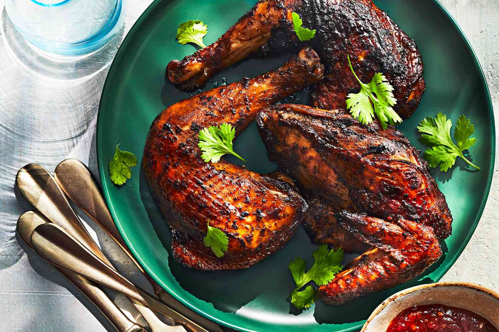

Chicken BBQ Recipe

What is chicken BBQ
These smoked chicken legs are so versatile and easy! I like to use applewood chips or other fruit woods, but maple is also a great choice.
Use your favorite BBQ rub. Letting the legs air-dry in the refrigerator overnight, combined with a higher smoking temperature,
helps prevent rubbery skin that is common when smoking chicken. Serve with your favorite BBQ sauce, if desired.
Ingredients
- 12 chicken drumsticks
- 1/4 cup vegetable oil
- Garlic
- 1/3 cup BBQ rub
How to make Chicken drumsticks step-by-step
- Place drumsticks on a rack over a drip tray or baking sheet. Air-dry in the refrigerator, 8 hours to overnight.
- Preheat an electric smoker to 275 degrees F (135 degrees C) and add wood chips according to manufacturer's instructions.
- Brush drumsticks lightly with vegetable oil. Place drumsticks in a resealable plastic bag and sprinkle with the rub. Toss to coat evenly.
- Place drumsticks on the rack in the smoker. Smoke until chicken has reached an internal temperature of 165 degrees F (74 degrees C), about 2 hours.